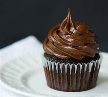

Cupcake de Chocolate
Ingredientes
- 1 xícara de farinha de trigo
- 1/2 xícara de cacau em pó
- 1 colher de chá de fermento em pó
- 1/2 colher de chá de bicarbonato de sódio
- 1/4 colher de chá de sal
- 1/2 xícara de açúcar
- 1/2 xícara de leite
- 1/4 xícara de óleo vegetal
- 1 ovo
- 1 colher de chá de extrato de baunilha
Modo de Preparo
- Pré-aqueça o forno a 180°C e prepare as forminhas de cupcake.
- Em uma tigela, misture a farinha, o cacau, o fermento, o bicarbonato e o sal.
- Em outra tigela, bata o açúcar, o leite, o óleo, o ovo e a baunilha até ficar homogêneo.
- Adicione os ingredientes secos à mistura líquida e mexa até incorporar.
- Distribua a massa nas forminhas e asse por cerca de 20 minutos.
- Deixe esfriar e decore com glacê, confeitos ou raspas de chocolate.
- Sirva e aproveite!